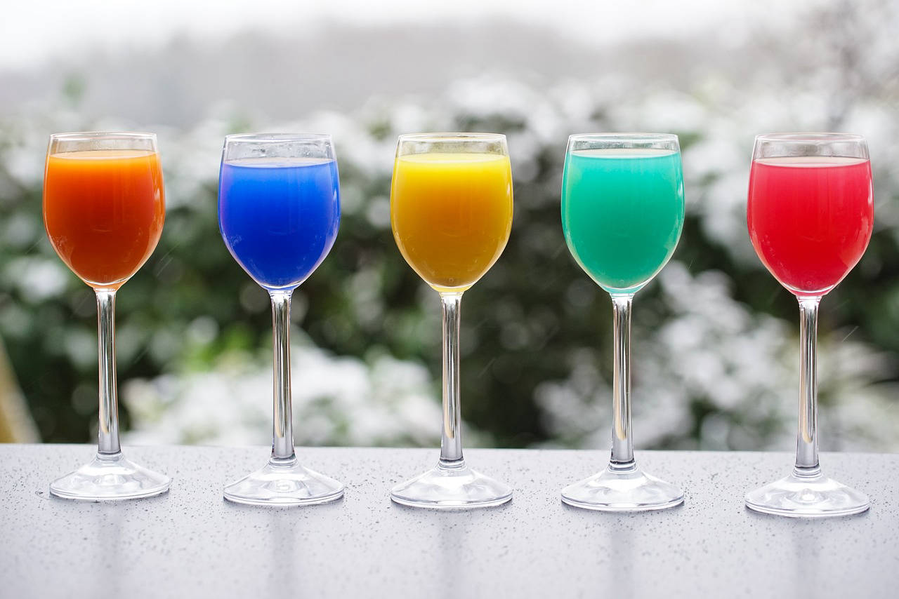
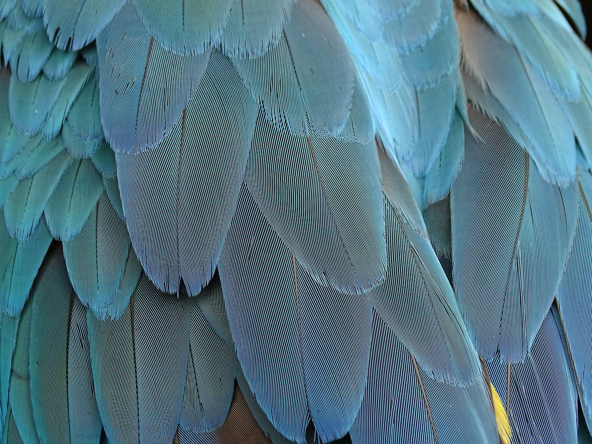

Una selecció del bo i millor que se pot visitar a Mallorca sobre art, experiències visuals i estètiques i sobre cultura en general

Bellesa natural
Es paisatges són també una important font de gaudi estètic. Afortunadament Mallorca n'està ben proveïda, tant per nombre com per bellesa i espectacularitat

Un territori molt culturitzat
A tot arreu pots trobar innumerables mostres des ric patrimoni cultural de sa illa, tant des d'es punt de vista històric com antropològic, gastronòmic, musical...